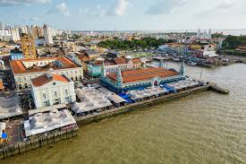

Debate Especial - Meio Ambiente
Publicado em 05/11/2025
Conferência das Nações Unidas sobre as Mudanças Climáticas de 2025. BitLovers.
COP30, principal conferência que debate questões relacionadas ao Meio Ambiente. Dessa vez, sendo realizada no Brasil, na cidade de Belém no Pará, onde se tornará de maneira temporária, capital do Brasil. Não apenas capital do Brasil, Belém é capital da maior floresta tropical do mundo, A Amazônia, onde sofre com efeitos devastadores do desmatamento e da exploração de recursos não renováveis.
O Brasil vem para a COP30 como juiz controverso, e não jogador. Ao mesmo tempo que sua função vai ser apaziguar os ânimos relacionados as mudanças climáticas, em um mundo cada vez mais longe de cumprir a Agenda 30 e o Acordo de Paris, o Brasil representará a si no meio da Floresta Amazônica, com representantes governamentais e da esfera civil, desde ONGs como o Greenpeace, até organizações juvenis como a União dos Escoteiros do Brasil, onde todos estarão representando os seus direitos previstos na Constituição Cidadã:
Art. 225. Todos têm direito ao meio ambiente ecologicamente equilibrado, bem
de uso comum do povo e essencial à sadia qualidade de vida, impondo-se ao Poder Público e
à coletividade o dever de defendê-lo e preservá-lo para as presentes e futuras gerações.
Do outro lado, o Brasil e a própria COP se envolvem em escândalos. Em andamento, o Projeto de Lei 2159/2021, carinhosamente nomeado de "PL da Devastação", prevê o auto licenciamento ambiental, flexibilizando o desmatamento de áreas de preservação. Em junho, a Agência Nacional do Petróleo (ANP) realizou um leilão onde ofereceu 47 blocos de terra para arremate, 34 blocos foram vendidos, incluindo 19 na Foz do Amazonas, sendo uma completa vergonha a um país que se diz soberano nas questões ambientais, ferindo o próprio inciso do Art. 225:
§ 4º A Floresta Amazônica brasileira, a Mata Atlântica, a Serra do Mar, o
Pantanal Mato-Grossense e a Zona Costeira são patrimônio nacional, e sua utilização far-se-
á, na forma da lei, dentro de condições que assegurem a preservação do meio ambiente,
inclusive quanto ao uso dos recursos naturais.
Não precisamos mencionar os escândalos de infraestrutura pública que aconteceram na cidade de Belém, preços exorbitantes de hospedagem, derrubada da própria floresta para a construção de uma rodovia, muros para esconder partes periféricas da cidade e até a derrubada de árvores vivas para colocarem árvores de plástico.
Apesar dos apesares, a COP30 deve ser vista como oportunidade, em especial, para organizações civis defenderem a sustentabilidade e preservação ambiental, temos como dever, pressionar o governo nacional para que tome atitudes sérias quanto ao desmatamento e outras políticas predatórias que destruam o Meio Ambiente, pois é nosso direito e nosso dever, cuidar do nosso lar para as futuras gerações.
Considerações finais.
Não é uma questão política, é uma questão de sobrevivência a defesa ao Meio Ambiente, não devemos ser separados por ideologia em defender a nossa casa comum. Apesar da computação contribuir para o aumento da poluição de resíduos eletrônicos e gastos hídricos, é uma área utilizada para a defesa do Meio Ambiente e cada vez mais surge efeitos para minimizar seus impactos.
"Quer continuar a respirar? Comece a preservar."